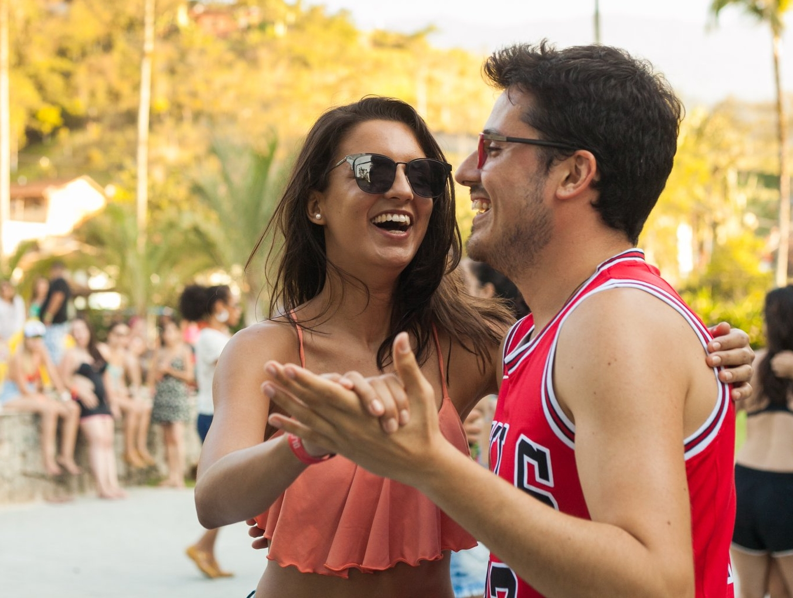

Sobre o Laboratório de Forró da Wal
Localizado em São Paulo, na região do Butantã, o Laboratório de Forró da Wal traz para o mercado da dança de salão, os cursos de Forró e Samba de Gafieira sob uma perspectiva social, cultural e técnica voltada para a consciência corporal e promoção de saúde física e mental.
Fundado em 2019, o Laboratório de Forró, hoje, oferece cursos de outros ritmos, aulas particulares e treinamento físico voltado principalmente para a dança.
Missão: "Proporcionar atividades da dança que promovam maior qualidade de vida associada a saúde física, mental e social dos alunos.".
Nossas aulas de dança são ministradas pela professora Walquiria Godoy. Formada inicialmente no curso de Licenciatura em Física, nossa professora passou pela Faculdade de Educação e de Filosofia da Universidade de São Paulo e, no âmbito da dança de salão, a qual pratica há 12 anos, foi aluna do Pé Descalço de São Paulo e da Gafieira da Ladeira. A professora segue seus estudos na dança de salão, faz parte da Cia Vanessa Jardim Dança e é graduanda do curso de Educação Física da Escola de Educação Física e Esportes da USP. Ela acredita que sua vivência multidisciplinar na universidade e na dança de salão foram fundamentais para constituir uma visão completa e diferenciada da dança e do ensino de dança, que se reflete diretamente no objetivo, conteúdo e metodologia presentes em suas aulas de Forró e Samba.
Nosso estabelecimento
Nosso estabelecimento está localizado no Jardim Bonfigliori, zona oeste de São Paulo.
Diferenciais do Lab
- Ambiente aberto
- Alunos e professores vacinados (covid)
- Uso obrigatório de máscaras
- Desconto no Forró da Wal
- Horário para treino e prática
- Acesso ao plantão de dúvidas